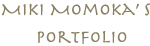

Welcome to my portfolio site !!
専門学校で、Webの勉強をしている、三木 百花 と申します。
私のポートフォリオサイトにお越し下さり、ありがとうございます♪
What I have in mind
私は、相手の立場や気持ちになって、考えることを心がけています。
- 相手の課題を研究し、アイデアを考え、実際につくる。
- 効率的に綺麗でまとまったコードを書く。
将来は、考えやコーディングにこだわりを持って、
周りの人を幸せにできるようなフロントエンドのエンジニアになりたいです。
WORKS
WORKS
PROFILE
-
NAME
三木 百花
(みき ももか) -
SCHOOL
ECCコンピュータ専門学校(大阪)
Webエンジニア専攻(20年卒) -
BIRTH DAY
1999/03/17 20歳
-
ENGINEER SKILL
好きで得意な言語は、HTML5・CSS3・JavaScript・jQueryなどのフロントエンドの言語です。
PHP・MySQLなどのバックエンドの知識も持っています。
Laravel・Vue.jsなどのフレームワークについても勉強を進めています。
自分自身のコーディングガイドラインも作成しました。 -
REQUIREMENT
- 2015年：日本商工会議所主催簿記検定試験3級取得
- 2015年：全国商業高等学校協会主催 情報処理検定ビジネス情報部門1級取得
- 2016年：全国商業高等学校協会主催簿記実務検定1級取得
- 2017年：文部科学省後援 色彩検定3級取得
- 2018年：サーティファイ主催 Webクリエイター能力認定 エキスパート取得
-
EXPO & CONVENTION
- 2017年：学内コンテスト「ECC EXPO 2017」に選出 作品名「み〜とぺっと」
- 2017年：第１回 専門学校 HTML5作品アワード デザイン賞受賞 作品名「#mode」
- 2018年：第13回 若年者ものづくり競技大会 ウェブデザイン部門 銅賞受賞
- 2018年：Hack U 2018 OSAKAに出場 作品名「Mr.SOS」
- 2018年：学内コンテスト「ECC EXPO 2018」に選出 作品名「みゅーびっく」
-
FAVORITE THINGS
楽器 と ゲーム と うさぎ と ゆるりんぱんだ と コーディングが大好き。
フィギュアスケートを見るのも好きです。 -
MESSAGE
日頃から、どうすれば綺麗で効率的なコードが書けるかを考えながらコーディングしています。
中学校の頃の吹奏楽での活動の時から、集中してとことん磨くことが好きで、現在でのweb制作でも活かされています。
エンジニア専攻ですが、Webデザインも大好きです。
授業以外に、フレームワークや3Dアニメーションなどを勉強しています。
専門1年生の頃からお粥屋さんで働いています。
3年生になって、Webのアルバイトも始めました。
HISTORY
-
2011〜2013
Junior high school days
中学校3年間は吹奏楽部に所属。パートリーダーも任されました。
この時は、自分のWindowsのパソコンでよく遊んでいました。 -
2014〜2016
High school days
大阪ビジネスフロンティアという商業高校に通っていました。
情報処理や簿記、ビジネスなどについての授業があり、その中で一番、情報処理の授業が楽しく、大好きでした。
吹奏楽部に所属し、パートリーダーも任されました。 -
2017
ECC computer college year1
前半は、グラフィックデザイン・Webデザイン・コーディングを全体的に学びました。
後半は、エンジニア専攻として、JavaScriptやPHPについて学び始めました。
とても楽しく、作品制作のモチベーションにも繋がりました。 -
2018
ECC computer college year2
２年生になり制作して行く中で、自分がバックエンドよりもフロントエンドの方が得意で、好きだということが分かりました。
そして、1年生の時に取れなかった皆勤を取ることができました！
おまけに後期の成績はオールA(Aが最高値)でした。当たり前なのですが、やはり嬉しいです。 -
2019
ECC computer college year3
3年生になって、WEB制作会社でアルバイトを始めました。
また、１年生から飲食店のアルバイトも続けており、3年目に突入しました。
現在、チーム制作で、企業の情報を登録し、皆が探せるというサイトを作っています。
それが完成したら、実際に次年度から学内の学生が使う予定です。
CONTACT
なんでもお気軽に、ご連絡ください。
miki.momoka.0317@gmail.com